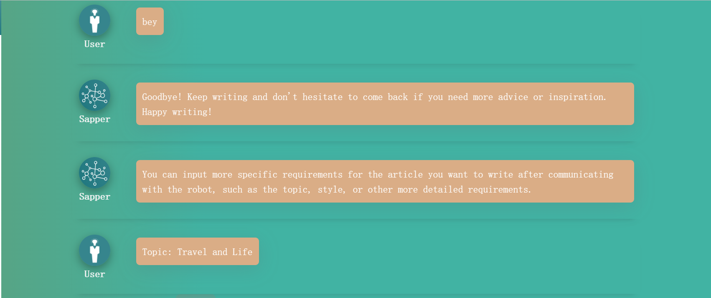
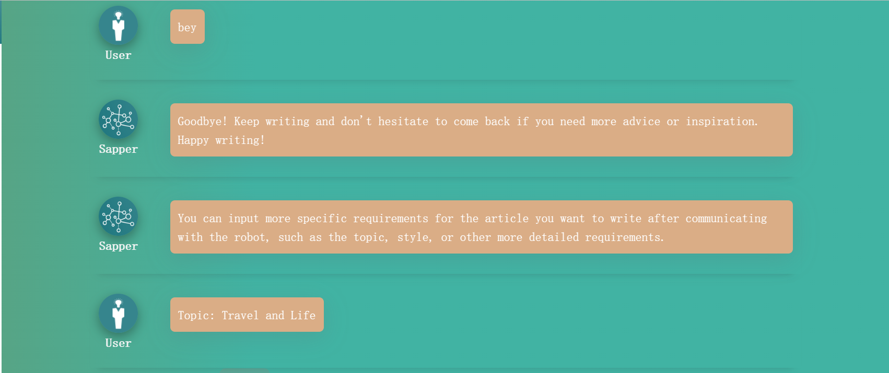

Chun Xiao Xie
Author： Chen Zhong
APPLICATION SCENARIO AND TARGETED END USERS
To begin with, we'll delve into the different scenarios where Chun Xiao Xie can be applied, the targeted end-users it's aimed at, and their individual needs for the product.
Application Scenario
- Literary creation: When encountering a lack of inspiration during the creative process, Chun Xiao Xie can be used to find inspiration;
- Daily writing: When facing difficulties in writing WeChat copy or not knowing how to complete a writing task assigned by a leader, Chun Xiao Xie can be used to assist writing and improve efficiency.
End users and Their Needs
- Writer: Use AI tools to assist writing and help improve writing efficiency;
- Ordinary people: When writing WeChat copy or other writing tasks, AI tools can help them write better articles.
EXPLORATION AND CHALLENGES OF LLM
Now, we describe how we learn the task knowledge from the LLM, experiment prompt effectiveness, and summarize the task challenges.
Explorations
Before writing an article, there are several steps involved such as ideation, finding materials, organizing them, drafting, and revising. To assist users in completing these steps, We have designed a full-process simulated writing application that enables users to write the most suitable article as per their needs. The application comprises four sections. Firstly, the Ideation section, where users can ask for suggestions when they encounter unfamiliar content using LLM or have no idea or insufficient knowledge about the topic. Secondly, the Materials section, where users can get suggestions for suitable materials or styles for their articles. Next, users can submit the article type, theme, and materials to LLM to generate the article. Finally, to cater to users' different revision requirements, a Revision section is designed where users can choose the direction and content of revision as per their needs. Chun Xiao Xie can assist users in completing the writing process, and the LLM's assistance can reduce the threshold for writing.
Challenges
The challenge with this task is that the prompt is composed of user input, and there is no fixed template to follow. Additionally, there is no established optimal prompt that guarantees stable and consistent results when generating an article with AI. As a result, there is a need to explore and experiment with different prompts to ensure that the AI-generated text is accurate and appropriate for the given context. This requires the development of a flexible and adaptable system that can effectively incorporate user input while ensuring the quality of the output.
APPLICATION USAGE
Writing Guidance
User inputs text type, LLM outputs writing advice.
Refine Communication
The user engages in a conversation with the writing robot Chun Chun and enriches their own needs.
 

Writing Preparation Advice
The AI provides the necessary materials for writing.

Knowledge Search
The user inputs the knowledge they want to search for.
Abbreviate Knowledge
The user inputs fragmented knowledge. To create the final prompt, split the required knowledge into two parts and input each part into separate sections.

Writing
The AI writes based on the user's previous inputs, and then polishes the parts that need refinement.
AI-CHAIN DESIGN
Next, let me introduce my AI chain design and major features.
Figure-1: AI Chain of Lightweight Writing Assistant
Writing Guidance
The user inputs an article type, and LLM provides guidance to help the user have a rough framework for their task. At the level of prompt design, Prompting Decorator's Persona was used here, and I gave LLM the identity of a Chinese language teacher, allowing the large model to guide students in writing and thus improving the accuracy of LLM's output.
Refine Communication
After the initial guidance, the user will have a general understanding of the task, but may still be unclear about certain details (if already clear, skip this part). The user can ask LLM to answer any questions that are still unclear in the guidance. They can also communicate suitable topics, the direction of writing, and the target audience. Until the user has a clear understanding of their writing task, they can input their requirements into the program and exit the chat. At the prompt design level, we utilized the Persona and Context Control features of the Prompting Decorator. We had the LLM assume the role of a chatbot and set the Context Control to a conversational format. Incorporating conversation can enhance user engagement and provide a more interactive and intelligent experience. Furthermore, we supplied the LLM with comprehensive information about the task, including writing suggestions, inspiration, and reference materials, all of which contributed to improving the accuracy of the LLM's output.
Writing Preparation Advice
Based on the user's initial article type and the requirements supplemented during the conversation, LLM provides specific materials that need to be given before writing.
Knowledge Search
Users can search for knowledge based on the suggestions provided by the previous feature or their own ideas. They can conduct multiple rounds of searches until they find suitable materials and knowledge.
Abbreviate Knowledge
The user entrusts the relatively complex parts of the knowledge they need to LLM for summarization, making this part of the content clear and concise. Then they input it into the next section. The user can also input materials that do not need to be summarized into the next section.
Writing
LLM uses the article type and other information provided by the user to generate an article.
Writing
LLM uses the article type and other information provided by the user to generate an article.
RAPID PROTOTYPING PROCESS
Lastly, we will describe how our AI chain's design and implementation have evolved and been enhanced through the rapid prototyping process. We will also discuss potential future enhancements to the system.
Original Version
There were only two parts of the content, LLM writing and LLM polishing. LLM writing is an unsupervised analytical flow, so the generated articles have uncontrollable issues. Also, accepting the entire style and other aspects of the writing may lead to situations where it does not meet the user's needs.
Problem Resolution
Therefore, we incorporated a human supervision section for each task segment to minimize uncontrollable factors. However, the effectiveness of the LLM's output may be influenced by varying interpretations of an article among different individuals. To mitigate this impact, we introduced an LLM suggestion and suggestion robot section.
Future Improvements
We've refined our system by adding a suggestion robot function and optimizing LLM's suggestions through prompt fine-tuning. We're also working on enhancing LLM's writing ability. Note that some of these ideas have been implemented on Wen Xiao Jie.
IMPRESSIONS OF USING SAPPER
The process of using Sapper is different from traditional programming methods. I have used both Python and Sapper to achieve the same functionality, and found that Python is slower in programming speed and generates more error messages than Sapper, which has been wrapped to reduce the occurrence of errors. Sapper's innovative and simplified programming approach, combined with tools like LLM that utilize natural language prompts to accomplish various tasks, further reduces the programming threshold for ordinary people, enabling them to develop their own programs for specific tasks. This allows ordinary people to participate in development work as well.😘